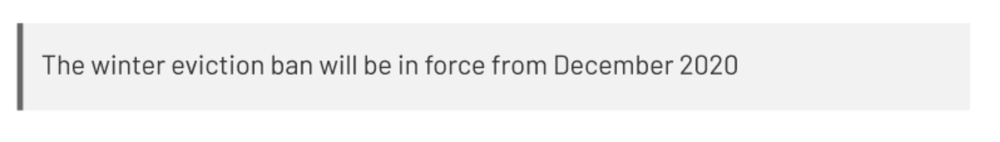
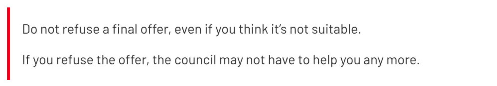
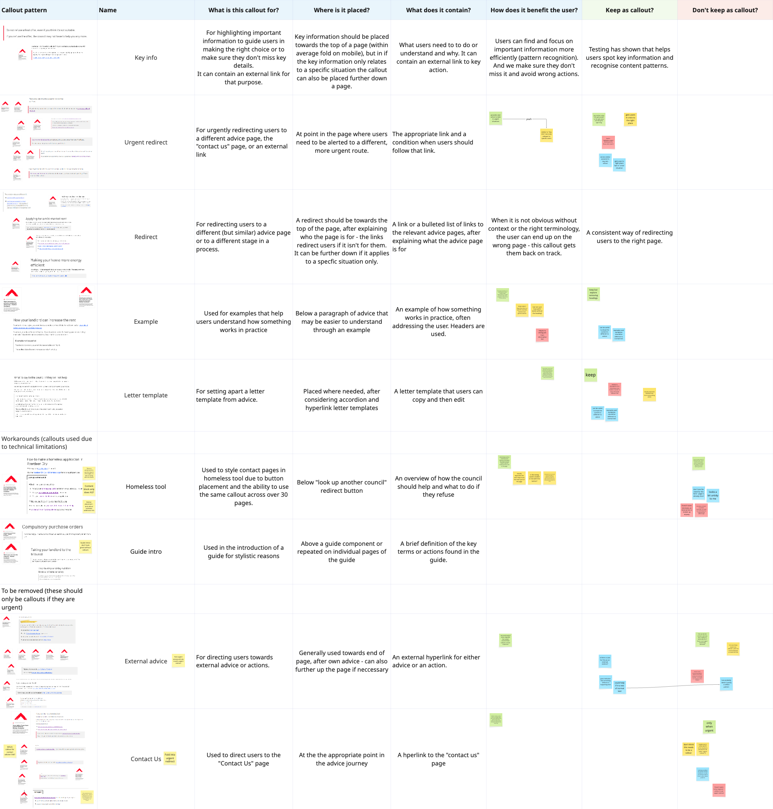
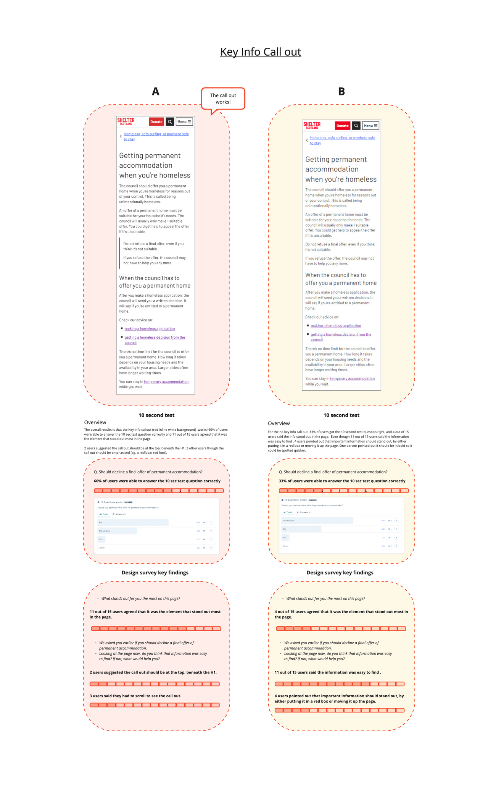
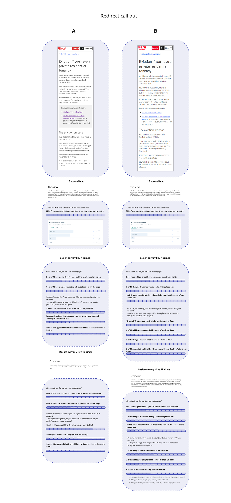

Callout component review
Overview
The Shelter Scotland advice team used multiple callout components across housing advice pages to highlight important information, redirects, and guidance. However, the content design team lacked clear guidelines around when each variation should be used and whether users interpreted them as intended.
The project combined competitor analysis, workshops, and usability testing to review the effectiveness of existing callout patterns and establish clearer usage guidelines for the advice team.
This was my first project at Shelter Scotland. I was responsible for driving the project, helping evaluate how users perceived callouts, whether they improved information visibility, and how effectively they supported users navigating high-stress advice journeys.
I worked closely with content designers and a researcher to help translate findings into practical standards for the advice team.
The problem
Users visiting Shelter Scotland’s advice pages are often under stress and need to find information quickly.
Callouts were being used across the experience to highlight key information, urgent actions, and redirects, but their usage had evolved inconsistently over time. The content team lacked clear rules around:
- Which callout should be used in different situations
- Whether users understood the purpose of each variation
- How callouts affected information visibility and perceived importance
- Whether too many callouts reduced their effectiveness
At the time, multiple callout styles existed within Shelter’s Contentful, including warning callouts, highlighted information callouts, and redirect patterns.


Research approach
The project combined competitor analysis, internal workshops, and unmoderated user testing in Lyssna.
Competitor analysis
We reviewed callout usage across Shelter England, GOV.UK, NHS, Citizens Advice, and Energy Saving Trust. The analysis focused on:
- Number of callout variations used
- Visual hierarchy and placement
- Content type and purpose
- Frequency of use across pages
Most competitors used a small number of highly consistent callout styles supported by straightforward guidelines. The research also highlighted the importance of:
- Clarity
- Visibility
- Limited frequency of use
- Consistent placement
- Strong visual hierarchy
Workshops with the content design team
We ran two workshops to better understand how callouts were currently being used and where inconsistencies existed. The first workshop focused on:
- Reviewing all existing callout patterns
- Understanding when and why they were used
- Evaluating effectiveness based on visibility, clarity, frequency, and placement
- Identifying opportunities to simplify the component system
The review revealed several callout variations were repetitive, unclear, or rarely used. As a result, the team aligned around two primary callout types:
- Red inline callout for key information and urgent actions
- Grey inline callout for redirects, examples, and supporting content
These findings informed the usability testing phase.

User testing
We conducted unmoderated A/B testing through Lyssna to compare pages with and without callouts. Participants completed 10-second tests followed by short surveys designed to evaluate:
- Information visibility
- Attention capture
- Ease of understanding
- Perceived importance of content
Key findings
Red callouts significantly improved visibility of key information

The red inline callout consistently outperformed pages without a callout. In testing:
- 60% of participants correctly identified key information within 10 seconds when the red callout was present
- Only 33% identified the same information without the callout
Most participants also identified the callout as the element that stood out most on the page. However, several users suggested the component should appear higher on the page, directly beneath the H1, to increase visibility further.
The findings confirmed that the red callout successfully highlighted critical information and improved scanning behaviour.
Users developed “callout tunnel vision”
An unexpected finding emerged during testing. Many users focused heavily on information inside the callout while overlooking nearby content.
This suggested users treated callouts as highly trustworthy priority content, scanning them before surrounding information. The behaviour reinforced the importance of:
- Including all essential information within the callout itself
- Avoiding dependencies on nearby explanatory content
- Using callouts sparingly to preserve effectiveness
Grey backgrounds reduced effectiveness

Testing showed that redirect links performed better on white backgrounds than grey ones. Participants noticed blue hyperlinks more easily against white backgrounds, while grey backgrounds appeared easier to ignore.
The findings aligned with “banner blindness” behaviour, where users subconsciously ignore elements resembling advertisements or banners.
Several users also described pages with grey callouts as too wordy or visually dense. This led to recommendations to standardise white backgrounds across callout patterns.
Placement strongly influenced usability
Across multiple tests, participants repeatedly suggested placing important callouts higher on the page. Some users missed key information entirely because the callout appeared below the initial viewport.
Others suggested stronger visual emphasis through:
- Increased contrast
- Bold styling
- Clearer borders
- Reduced surrounding content clutter
The findings reinforced how closely placement and hierarchy affect information discoverability on long-form advice pages.
Outcome
The research directly informed a new set of callout guidelines for the Shelter Scotland advice team. The updated guidance established:
- Clear definitions for red and grey callout usage
- Consistent visual styling across advice pages
- White backgrounds as the standard approach
- Rules around placement, hierarchy, and frequency of use
- Guidance for redirects, examples, urgent actions, and template content
The project also helped simplify the component system by removing unnecessary or overlapping callout variations.
It also influenced the wider organisation, with the research and guidelines included in Shelter’s design system.
Reflection
This project highlighted how even small interface components can significantly influence how users scan, prioritise, and trust information.
The research reinforced that effective content design is not only about visual emphasis, but also about consistency and clear behavioural patterns.
One of the most interesting findings was how strongly users prioritised information inside callouts, often at the expense of surrounding content. This demonstrated the responsibility that comes with using attention-directing components and the importance of using them intentionally.
The project also strengthened collaboration between UX, research, and content design by creating shared standards grounded in user evidence rather than individual preference.
Other projects
Stepper tool accessibility | Housing advice
Making a step-by-step advice tool clearer with a one-question-at-a-time pattern.
Read case study